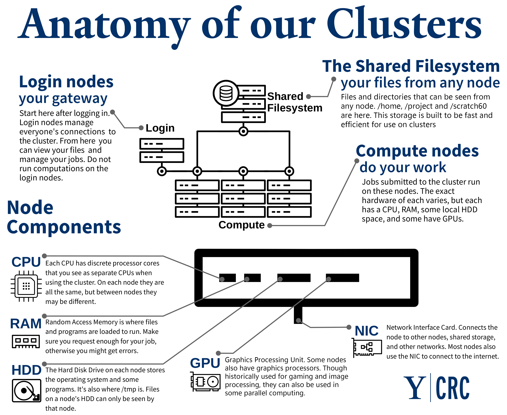
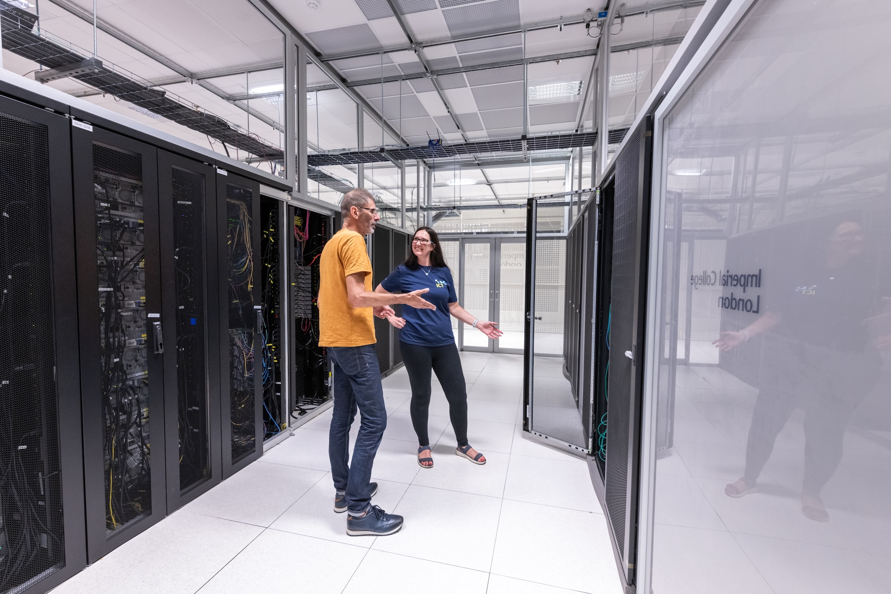
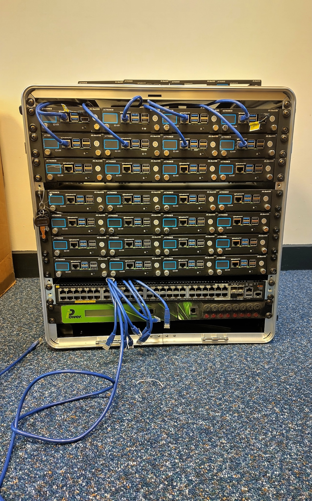
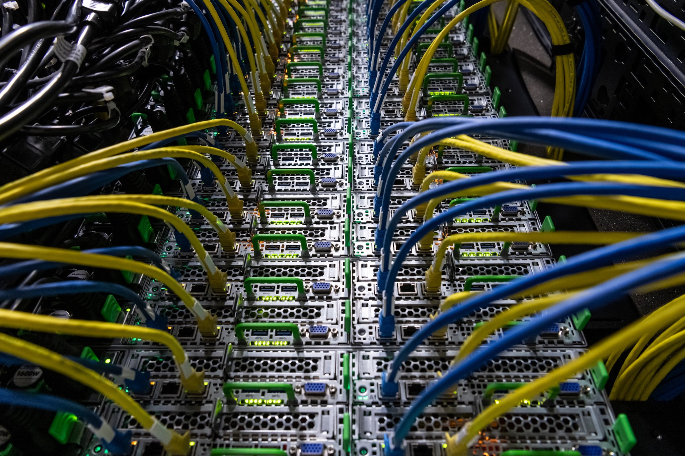

Content from Why use HPC?
Last updated on 2026-03-19 | Edit this page
Estimated time: 40 minutes
Overview
Questions
- What are good use cases for a High-Performance Computing (HPC) cluster?
Objectives
- Explain when using an HPC cluster is a good idea.
Introduction
Icebreaker questions
What Digital Research Infrastructure facilities are you aware of in your institution?
Scientific research is becoming increasingly computational (Foster, 2011). Think, for example, of huge text datasets that comprise the entirety of Wikipedia or Reddit, or of sensor data from structures like bridges and tunnels, containing information on vibrations, seismic activity etc. To make this more concrete, let’s look at some studies that have tried to quantify this change: One study looking at the size of medical image datasets used for research found that the median dataset size in 2018 was up to 10 times larger compared to 2011 (Kiryati & Landau, 2021). Another study looking at big data in industry and academia, reports that the data that CERN records in a year is projected to increase from 160 petabytes in 2018 to 800 petabytes in 2026 (Clissa, Lassnig, & Rinaldi, 2023). Or, think of the hugely complicated climate models that scientists run to predict the impacts of the climate crisis. Processing huge datasets or running calculations of this complexity requires a lot of computing power, more than an individual laptop or work station can provide.
To get around this problem, researchers may turn to High-Performance Computing (HPC) which refers to the use of powerful computers and programming techniques to solve computationally-intensive tasks. HPC can refer to custom-built supercomputers or groups of individual computers that are connected together in a network and work as a unified system, forming a cluster. We call these indivisual computers of a cluster nodes. To give a taste of the benefit of using HPC over a regular computer, let’s look at an example: A PhD student wants to cross-validate a statistical model 1,000 times. Running the model once on a laptop once takes one hour, meaning that cross-validating it 1,000 times would take over a month! However, if all of the model runs happen in parallel on 1,000 nodes of an HPC cluster, the cross-validation would be complete in one hour. How much research can be sped up is highly dependent on how efficient the code is and how parallelisable the problem.
The information presented here has been copied and lightly adapted from:
Case studies
Let’s now look at some specific cases in which the use of an HPC cluster enabled impactful research.
Case study 1: Physics
Most of us will remember the first image of a black hole, which was captured in 2019. This would not have been possible without HPC! Scientists collected data using eight telescopes located around the world, which were then transferred to two supercomputers for processing. The superior processing power of the two supercomputers made it possible to combine the data from all eight telescopes at high speeds.
Case study 2: Engineering
Researchers from Queen’s University Belfast are using HPC to model the performance of offshore and coastal structures. This work places special emphasis on the behaviour of floating wind turbines, which are used to generate renewable energy. Wind turbines that are further away from the coast benefit from, for example, stronger and more consistent wind, but their stability can suffer from the more adverse weather. Modelling the various factors and their interactions that can affect their stability would be impossible without HPC infrastructure.
Case study 3: Biology
HPC was fundamental in the creation of the neural network AlphaFold, which is highly accurate in predicting the structure of proteins. This is incredibly important work that enables the discovery of new drugs.
Case study 4: Archaelogy
Researchers at the University of Bradford used their local HPC cluster to recreate 3D models of degraded sites.
What kind of resources does this researcher need?
- Analyse survey responses from 300 human participants.
- Run a climate model simulation at high spatial resolution.
- Train a Large Language Model.
- Run a simple regression on CSV data (50 MB).
- Analyse survey responses from 300 human participants.
- Answer: laptop
- Run a climate model simulation at high spatial resolution.
- Answer: HPC
- Train a Large Language Model.
- Answer: HPC
- Run a simple regression on CSV data (50 MB).
- Answer: laptop
High-Performance Computing and Artificial Intelligence
- Research is becoming more computational and, as such, requires more powerful computers.
- HPC enables research in various disciplines.
- AI is a field that often requires HPC resources.
Content from What is HPC?
Last updated on 2026-03-19 | Edit this page
Estimated time: 42 minutes
Overview
Questions
- How does a basic HPC cluster work?
- What does an HPC cluster look like?
Objectives
- List the components of a basic HPC system.
HPC clusters 101
The previous episode already established that HPC clusters are made up of computers, which we call nodes, which are connected through a, typically high-speed, network. Let’s now dig into the different components of an HPC cluster and see how they work together. HPC clusters will generally require the following basic components:
- nodes. There are different types of with specialised uses:
- interactive (or login) nodes are used to access the cluster
- compute node are used to run jobs. There are numerous compute nodes in a cluster.
- storage, where files are stored. The nodes used for storage may have more RAM than the compute nodes.
- a switch, which connects the login, compute, and storage nodes to allow them to act as a seamless unit. These are usually InfiniBand or other high-speed Ethernet to meet the low-latency, high-bandwidth requirements of HPC clusters.
- cables connecting the different nodes

The components listed until now are all hardware. A very important piece of software when working on an HPC cluster is the job scheduler. A job scheduler is essential because the resources of an HPC cluster are finite and the demand on those resources is usually very high. When submitting a job, users have to specify how many resources (RAM and GPUs) they require and how long they expect their job to take. The scheduler uses this information to prioritise jobs and make as efficient use of the resources as possible. One of the most commonly used job schedulers is Slurm. There will be more information on Slurm in the following episode.
Different types of HPC
We’ve talked about the different hardware components of an HPC cluster that determine the system’s computing power, bandwidth and memory storage. These can be configured in bespoke ways to suit the type of problem at hand. For example, some problems require a lot of storage space but little CPU, while others may require the opposite.
Embarassingly parallel
Some scientific problems require running the same programme multiple times, but with different parameters. Each run of the programme is completely independent from the rest, i.e. its run does not rely on the outcome of any other run. In this case, all runs can happen in parallel on separate CPUs and everything is combined at the very end. This would be an example of an “embarassingly parallel” task.
This relates to the concept of high-throughput computing, which not only runs multiple jobs in parallel and independently, but does so on ordinary computers. This means that the nodes used in these systems are not specialised, but very similar to what you would use in your own laptop.
For embarassingly parallel tasks, priority is on a large number of CPUs, with a high-speed low-latency interconnect being less important.
Message Parsing Interface (MPI) parallelism
Sometimes, jobs can be parallelised to an extent but cannot be run completely independently of each other, but need to exchange information. Generally this is the case because the different chunks of the task that needs to be completed can only be in a certain order.
In those cases, a high-speed low-latency interconnect is much more important compared to an embarassingly parallel task.
Will it embarassingly parallel
OUTPUT
[1] "This new lesson looks good"Visible HPC
A lot of the things we have been discussing can feel a bit abstract. What does a node look like? Where is a process happening? How do these computers communicate to each other?
Below you can see a picture from the Slough Data Centre hosting Imperial’s High Performance Computing facilities.

For better or worse, it is quite rare for researchers and research supporters to visit these facilities and get first-hand experience of what this equipment looks like.
That’s where mini HPC clusters like ours come in! They provide an opportunity for a wider audience to interact with this kind of infrastructure.
Here is a picture of our own mini cluster.

Clearly, these are very different beasts! Our cluster is much smaller and, at least somewhat, portable. However, the design of our cluster is realistic and can help build a visual connection to the real thing. Let’s look at how:
- the rack is 19 inches in width, which is the industry standard
- at only 12U, our cluster is rather short but stack four of them and you get a typical full size rack (48U)!
If we take a closer look at Imperial’s HPC facilities, we again see nodes connected by cables!

This is all about how our cluster looks, but let’s now talk about what is inside it. The workhorse of our cluster are 36 Raspberry Pi 5 computers. Thirty-two of them are used as compute nodes, one as the interactive login node and three as a distributed memory system. Raspberry Pi computers are a convenient choice for this mini cluster because they are easily available, relatively inexpensive and have a suite of compatible hardware and software, due to their popularity. The Pis are powered over Ethernet cables, which again are easy to obtain. In many HPC systems, the nodes will be more high powered than a Raspberry Pi and the interconnects will be more specialised than an Ethernet cable. In that sense, this system is more closely related to the high-throughput computing type of HPC, not using any specialised equipment.
This is not true of our network switch which is enterprise-level and very similar to what you would see in a real data centre.
- HPC clusters typically consist of nodes, used for user login, computation and storage, and interconnects.
- Different types of research questions may be best tackled by different types of HPC, e.g. depending on how interdependent the calculations are and how much data there is.